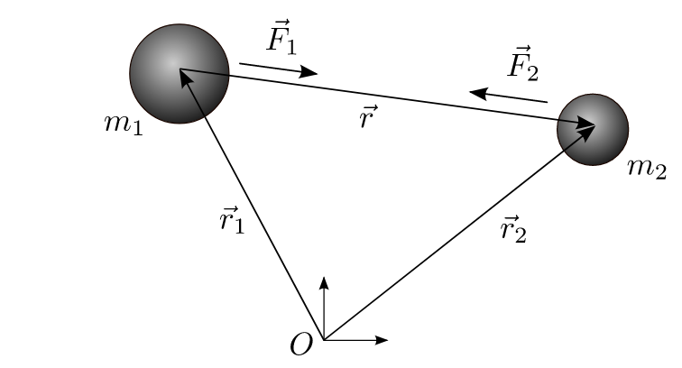

Forrige side🙂 🙁Løse 2-legemeproblemetFORUM
Vi skal i det følgende løse det som vi kaller 2-legeme-problemet:

To legemer med masse m1 og m2 påvirker hverandre kun med gravitasjonskrefter. Det virker ingen eksterne krefter. Initialposisjonene og initialhastighetene til begge legemene er kjent. For å gjøre utledningen enklere skal vi først sette oss på m1 og utlede bevegelsen til m2 sett ifra m1. Dermed trenger vi kun å se på bevegelsen til et legeme. Etter det skal vi se på bevegelsene til begge legemene.
På figuren ser du at vektoren r⃗ peker fra m1 til m2. Når vi setter oss på m1 og definerer origo der, så er denne r⃗ altså poisjonsvektoren til m2. Når vi har funnet hvordan r⃗(t) endrer seg som funksjon av tiden så har vi løst 2-legeme-problemet sett fra objekt m1. Neste side